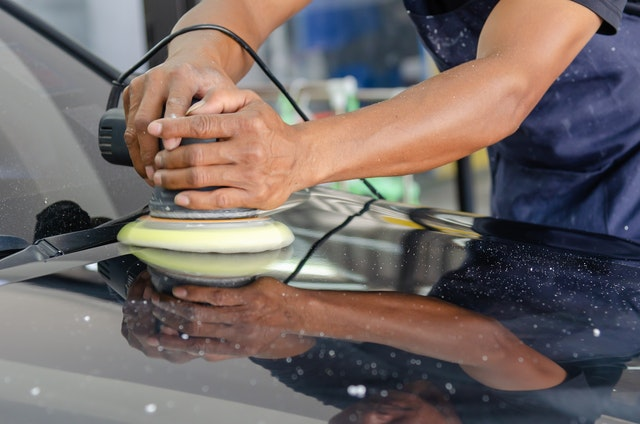
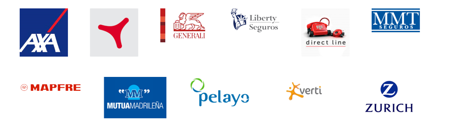

Realizamos todas las operaciones de Mecánica que pueda necesitar tu vehículo: Cambios de embrague, Correas de Distribución, Sustitución de discos y pastillas de freno, Revisión de Aceite y Filtros, etc.
TotalCare se ocupa ya del mantenimiento de más de 2.000 vehículos Por eso ocuparnos de los tres o cuatro que tu tengas en casa no es mayor esfuerzo para nosotros. En esta zona es frecuente que en una casa haya varios coches y acordarse de si en esta revisión le toca el cambio del filtro de combustible a uno de ellos, suele ser un dolor de cabeza.
Realizamos todas las operaciones de Mecánica que pueda necesitar tu vehículo: Cambios de embrague, Correas de Distribución, Sustitución de discos y pastillas de freno, Revisión de Aceite y Filtros, etc.
Hay días que habría sido mejor no levantarse… Pero si has tenido un mal paso, no te preocupes. Nosotros trabajamos con todas las compañías aseguradoras. Somos Taller de Calidad de MMT Seguros y de Mutua Madrileña, pero no son las únicas con las que colaboramos. Trabajamos con Mapfre, con Linea Directa, con Reale, con Catalana Occidente, Zurich, AXA, Pelayo, Allianz, Fenix, Liberty, Genesis, Caser, Verti… 
Si ya han hecho el camino, no te la juegues. Tráenoslos y te los cambiamos EN EL ACTO
Los neumáticos son un elemento esencial de la Seguridad. Hemos visto algún coche de 50.000 euros irse siniestro por un reventón de una rueda.
Si tu coche ha estado en nuestro taller, sabemos cuales son los neumáticos que llevas
Si quieres cambiarselos sólo tienes que llamarnos y los tendremos en el taller cuando llegues.
Trabajamos con todas las marcas que ofrecen la calidad y seguridad de la normativa Europea. Con los neumáticos no te la juegues.
Nunca montamos neumáticos de segunda mano. Te los montamos en el acto. No tendrás que esperar más que el tiempo de montaje y equilibrado.
Además nuestro servicio TotalCare te recordará cuando, aproximadamente, tienes que realizar la sustitución de los neumáticos y como mirarlo tu mismo.
Por último un recordatorio desagradable, pero mejor saberlo. Por cada neumático que lleves en mal estado la multa correspondiente es de 200€.